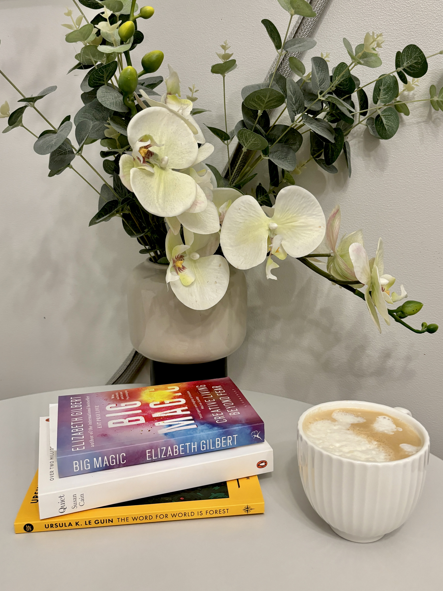

Brief book reviews in 2024
Published: 30/12/2024
The year is coming to an end. Here are some brief reviews of books I’ve read in 2024.
In short, I’ve read 13 books this year, including 4 fiction and 9 non-fiction titles. Some of them are in Vietnamese, while the rest are in English and are covered in this list. I’ve absolutely enjoyed the reading experience so far because most books are informative, insightful, and have shifted my POV in one way or another.
Lean In: Women, Work, and the Will to Lead - Sheryl Sandberg
Main take: Inspirational, best suited for women in their early career stages. What I’ve learnt
from this book:
- The top place is not reserved for someone else; I have every right to be ambitious about holding such a
position.
- There’s no need to be fully equipped for a job; anything can be and should be (re)learnt. It is possible–and
even favourable–to start with a fresh mind.
- I should do what makes me afraid. Pushing the limits is usually painful but worthwhile.
Ecological Intelligence: How Knowing the Hidden Impacts of What We Buy Can Change Everything - Daniel Goleman
Main take: Insightful and hopeless. The responsibility of corporates to transparently disclose (ecological) information about the full life cycles of goods was highlighted a decade ago, partly because of its importance in empowering consumers. Yet, sadly, not much has been done so far. For the full review, read here.
Life-Changing Magic of Tidying Up: The Japanese Art of Decluttering - Marie Kondō
Main take: It’s an interesting concept to view your possessions as emotion-carrying tangibles and your house as a personal charging net. However, the book entirely places tidying tasks on women’s shoulders, which now seems like an outdated and gender-biased belief.
Animal, Vegetable, Junk: A History of Food, from Sustainable to Suicidal - Mark Bittman
Main take: Amazingly rich in content. The book deliberatively introduced me to the idea that food is not only a personal issue but also a political weapon. It primarily describes the historical food landscape in the US, though.
The Defining Decade: Why Your Twenties Matter–And How to Make the Most of Them Now - Meg Jay
Main take: The idea of marriage intrigues me. According to the author, when you marry someone, you marry their beliefs, values, and worldviews–so choose carefully. And moving in together pre-marriage should carry corresponding responsibilities, not just merely to reduce the rent–so be wise.
Escape from the Ivory Tower: A Guide to Making Your Science Matter - Nancy Baron
Main take: It is essential–not least a privilege–for researchers to get their research heard by not only their peers but also people outside of the academia bubble, e.g., the general audience, policymakers, and the mass media. The book also presents different tactics for researchers to pave their work a way into light in various contexts.
Winning the Story Wars: Why Those Who Tell (and Live) the Best Stories Will Rule the Future - Jonah Sachs
Main take: If marketing drives consumerism, it’s often the marketing sort from the dark side. This book introduced me to the concept of ‘empowering marketing’–the type that tells people they’re sufficiently great and don’t need external validation via consumption–through storytelling. The author also provides exercises to practice ‘empowering marketing’; I think they’re useful as first steps to think about your marketing, and even further, business strategies.
Never Split the Difference: Negotiating as if Your Life Depended on It - Chris Voss
Main take: The book gave me more confidence to be bold in negotiation, but not to the point of being unfair. In fact, deals revolve around the subjective view of fairness: does one treat the other fairly enough? Chris’ key element of negotiation is what he calls ‘tactical empathy’–building rapport with counterparts before pressing hard for deal closure. I think it’s interesting that a tough former FBI negotiator could realise the strength and take advantage of such a ‘soft’ approach.
The Silo Effect: The Peril of Expertise and the Promise of Breaking Down Barriers - Gillian Tett
Main take: Having heard about ‘silos’ quite a lot before, I didn’t really understand the practical meaning until I read this book. Viewing silos from the anthropological lens, the author emphasises that we often fail to question how we classify our systems, be it in daily life or at work. As a result, we might overlook risks and miss opportunities by operating in the world as it is. Being aware of the silos effects and occasionally asking ourselves, “Why are we acting this way?”, might help. However, the book could be more concise.
Looking forward to 2025

My reading resolution for 2025 would be to expand the list with more fiction and news. Fictions as a dose for my imagination and creativity, and news to broaden my understanding of current affairs worldwide.
How about you? Have you spent some time reflecting on your learnings through books, right before the new year stands at the doorstep? No matter what, I hope you’re having a lovely holiday season, and are excited for what to come in 2025! :)
Any thoughts?